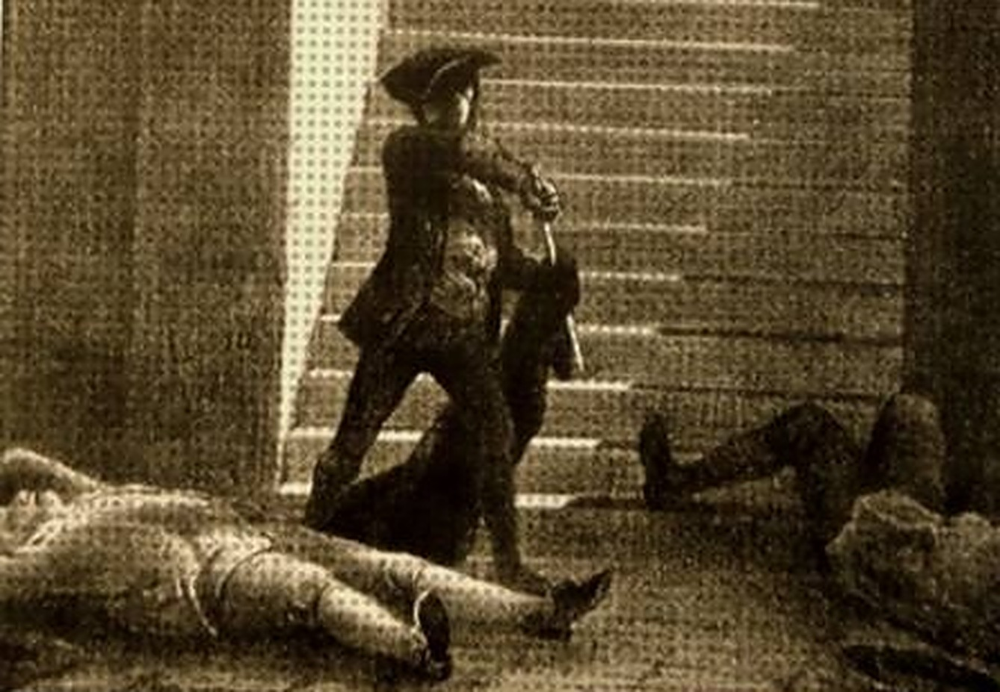
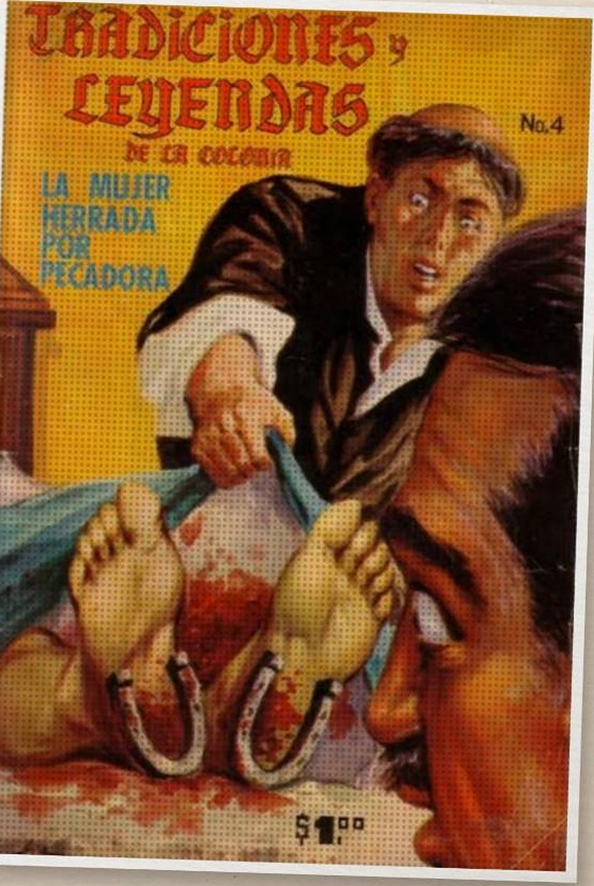
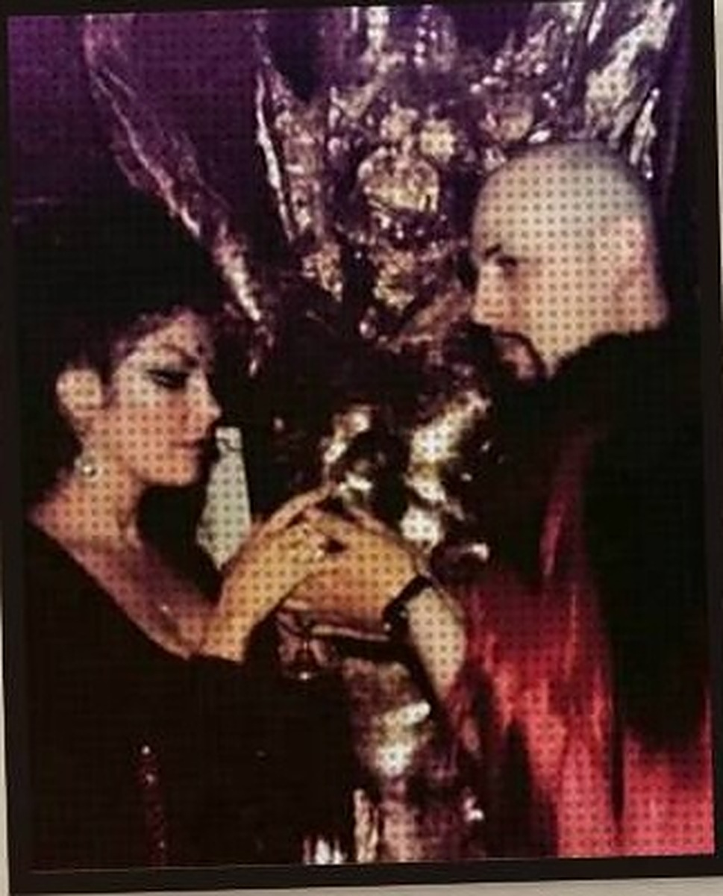
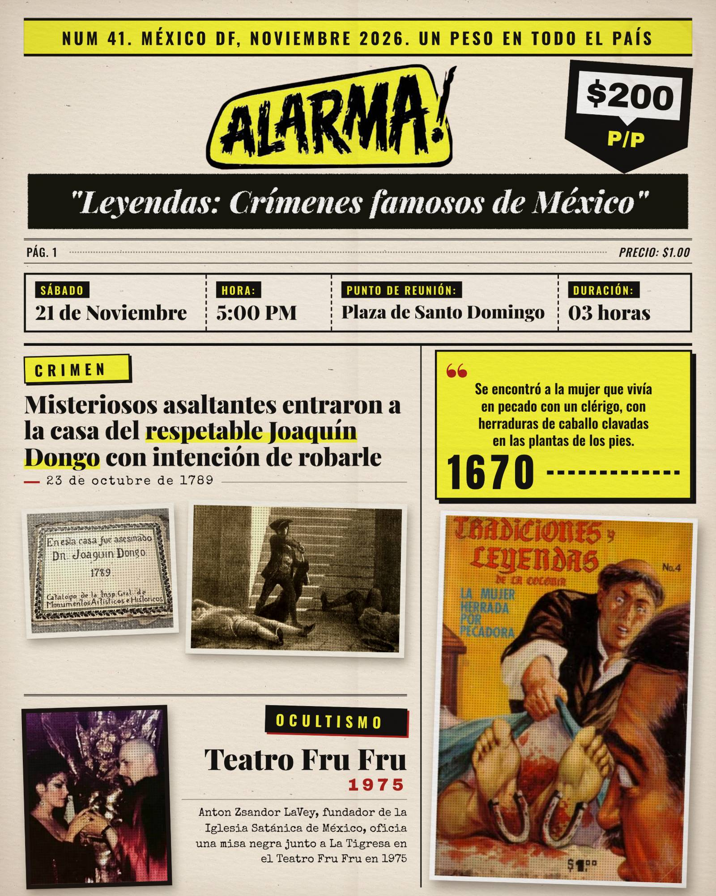

CDMX · EXPEDIENTE Nº 41
RECORRIDO TEMÁTICO
L
E
Y
E
N
D
A
S
y crímenes
FAMOSOS
del
Centro
Histórico
de
la
Ciudad de México
SÁBADO
21
DE
NOVIEMBRE
HORA
1
2
3
4
5
:00
PM
C R I M E N
11
VÍCTIMAS

JOAQUÍN DONGO · 1789
El crimen que
estremeció a la
Nueva España

1670
LA MUJER
HERRADA
HERRADURAS
CLAVADAS EN LOS PIES
“
PUNTO DE REUNIÓN
PLAZA DE
SANTO DOMINGO
O C U L T I S M O
Teatro
Fru Fru
1975

ESCENA DEL CRIMEN · NO CRUZAR · ESCENA DEL CRIMEN · NO CRUZAR · ESCENA DEL CRIMEN · NO CRUZAR ·
LEYENDAS Y CRÍMENES · LEYENDAS Y CRÍMENES · LEYENDAS Y CRÍMENES · LEYENDAS Y CRÍMENES ·
$200
por persona
3 HORAS
DE RECORRIDO
¿te atreves?

POR DM